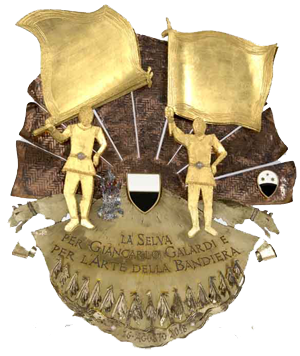

In Piazza del Campo è un tripudio di bandiere bianche e nere listate di arancio. La Lupa ha vinto la sua 37^ vittoria.
Una corsa strepitosa, quella condotta da Giuseppe Zedde, detto Gingillo, alla sua terza vittoria su Porto Alabe, il bellissimo sauro di 10 anni che per la seconda volta taglia per primo il bandierino.
Il popolo di Vallerozzi ha ricevuto dalle mani del suo Capitano il drappellone dipinto dall’artista belga Charles Szymkowicz, e ora è già in Duomo per ringraziare la Vergine Assunta in cielo alla quale è dedicata la Carriera di mezz’agosto.
La tensione dell’attesa, incastonata dentro questi incredibili quattro giorni, durante i quali tutti i senesi si sono ritrovati a vivere appieno la loro città, è terminata solo quando i dieci barberi sono usciti dall’Entrone di Palazzo Pubblico per allinearsi alla mossa.
Drago, Giraffa, Civetta, Pantera, Tartuca, Nicchio, Valdimontone, Bruco e Leocorno si sono allineate fra i canapi con la Lupa di rincorsa.
Da quel momento in poi tutta la piazza è rimasta sospesa. Migliaia di sguardi si sono focalizzati solo su un punto: la partenza.
A scattare in testa la Civetta e la Giraffa. Alla prima curva di S. Martino la Lupa, dall’interno, supera la Giraffa. E’ prima. La corsa è già finita. Inutili i tentativi della Giraffa che, fino all’ultimo metro di tufo, cerca di superare Gingillo. La Lupa si manterrà sempre in prima posizione con una corsa condotta in maniera magistrale, facendo esplodere di gioia i lupaioli che, solo nel 2016, avevano fatto “cappotto” vincendo sia la Carriera di luglio sia quella di agosto.
Questo è il Palio. Questa è Siena. Qui non siamo a una sagra riesumata solo per far cassa. Questa è la storia di una città che due volte all’anno si presenta, anzi, si ripresenta al mondo con una Festa che è sintesi di una storia gloriosa. Di un’appartenenza che è marca connotativa di una realtà che, per le sue antiche tradizioni, è diventata paradigma a livello internazionale.
Federico Fellini, con poche parole, riuscì a fare la sintesi di questo passato secolare: “Voi a Siena avete questa corsa preziosa, ed è singolare come nel conflitto delle Contrade vi sia la vostra unione. Tutto il mondo si sfalda e voi siete ancora qui con la vivezza di questi riti e con la fedeltà dei secoli. Credo sia l’unico esempio in Italia. C’è un cordone misterioso fra voi e i senesi di tutte le epoche: E’ bello. Molto bello”.
Sì, è veramente bello vedere un’intera collettività vivere, con passione viscerale, tre giri fatti, in una delle piazze tra le più belle del mondo, da 10 cavalli lanciati al galoppo per sintetizzare e, al contempo, far deflagrare sentimenti, passioni. Amore.
Quei magnifici destrieri portano le insegne di rioni, segmenti di una città. Di famiglie. Segmenti di un’umanità che riconosce, e legittima ancora, i valori tramandati dalle generazioni passate. Un’unicità che, in tanti, nel mondo, vorrebbero anche solo assaporare.

|
IL MASGALANO 2018

|
PREMIO PER I MIGLIORI ALFIERI
PALIO DEL 16 AGOSTO 2018
Realizzato da Paolo Penko e offerto dalla Contrada della Selva in onore di Gianfranco Galardi.

|
|


|